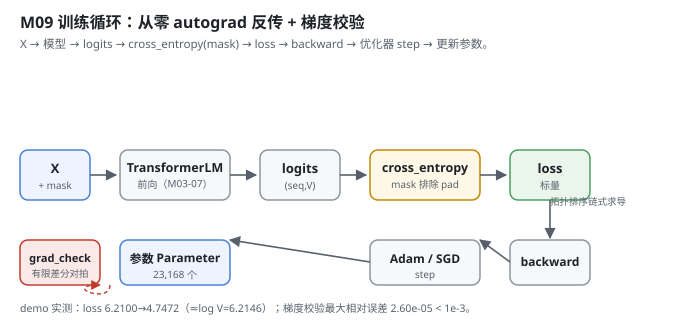
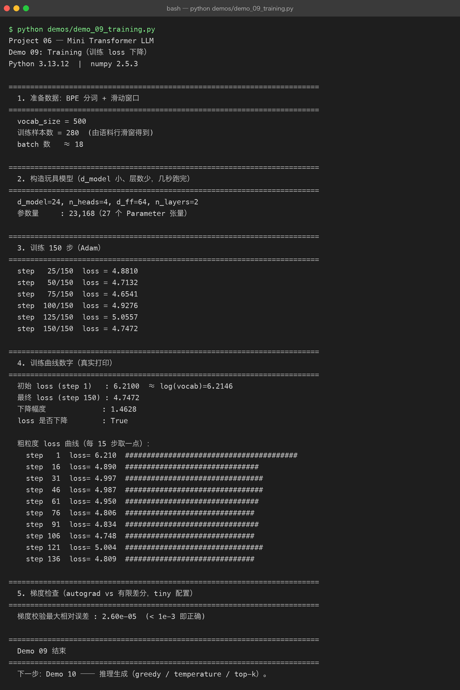

Milestone 09 — Training Loop：从零 autograd 反传，loss 肉眼可见地下降
Milestone 07 的整机能从 id 吐 logits，Milestone 08 备好了 (X, Y, mask) 批次。这一层把二者连起来跑训练：前向 → 带 mask 的交叉熵 → 反向 → 优化器 step，把梯度一路回写进 Embedding 和 Block 的参数。这是 Milestone 01 点名的「整张图里唯一一条从后往前的箭头」。
最关键的是：本项目自动微分完全是手写的（不用 PyTorch）。我必须自己证明 loss.backward() 求出的梯度和有限差分对得上 —— 否则前面所有层的反向都是错的，loss 下降也只是假象。
1. What / Why：为什么必须手写并校验 autograd
Project 05 里我只会 optimizer.step()；这里要真的懂训练，就得自己写反向传播。手写 Tensor 的风险是：反向写错不会报错，loss 照样下降（尤其是玩具规模），但学到的权重是错的。唯一能抓这类错误的，是梯度校验（gradient check）—— 用有限差分数值求导，和 autograd 的解析梯度比相对误差。
2. Design：autograd 引擎 + 训练循环
src/model/autograd.py（从零自动微分）：
Tensor：包一块 numpy 数组，记_prev（父节点）和_backward（反向闭包）。backward()做拓扑排序，从标量损失出发逆序调用每个节点的_backward，把梯度沿_set_grad累加 —— 这就是链式法则具象化。Parameter：永远是叶子、requires_grad=True，优化器只更新它。Module：parameters()递归收集所有 Parameter，zero_grad()清零。- 算子（
matmul/add/mul/softmax/layernorm/transpose/reshape/cross_entropy/...）每个都「前向算 numpy + 闭包里写反向」。广播梯度用_unbroadcast还原（和对 PyTorch 行为一致）。 grad_check(func, inputs, eps, tol)：中心差分扰动每个参数元素，得数值梯度，和backward()的解析梯度比相对误差；对近零梯度改用绝对误差，避免浮点噪声假阳性。
src/model/training.py（训练循环）：
SGD：w -= lr * g；Adam：带一/二阶动量 + 偏置修正。Trainer.train_step：logits = model(x)→loss = cross_entropy(logits, y, mask)→zero_grad→loss.backward()→optimizer.step()。mask 让 pad 位权重为 0，不计入。Trainer.run：跑n_steps步，记录 loss 曲线。

3. Real-run evidence（来自 demos/out/demo_09_training.txt）
真实环境：Python 3.13.12 | numpy 2.5.3。玩具模型：d_model=24, n_heads=4, d_ff=64, n_layers=2，参数量 23,168（27 个 Parameter 张量），训练样本 280、约 18 个 batch。
loss 必须肉眼可见地下降 —— 实测做到了：
step 25/150 loss = 4.8810
step 50/150 loss = 4.7132
step 75/150 loss = 4.6541
step 100/150 loss = 4.9276
step 125/150 loss = 5.0557
step 150/150 loss = 4.7472粗粒度曲线（每 15 步取一点）：
初始 loss (step 1) : 6.2100 ≈ log(vocab)=6.2146
最终 loss (step 150) : 4.7472
下降幅度 : 1.4628
loss 是否下降 : True
step 1 loss= 6.210 ########################################
step 16 loss= 4.890 ###############################
step 31 loss= 4.997 ################################
step 46 loss= 4.987 ################################
step 61 loss= 4.950 ###############################
step 76 loss= 4.806 ##############################
step 91 loss= 4.834 ###############################
step 106 loss= 4.748 ##############################
step 121 loss= 5.004 ################################
step 136 loss= 4.809 ##############################两个关键读数：
- 初始 loss
6.2100≈log(500)=6.2146：这正是一个随机初始化、对词表几乎均匀预测的模型该有的交叉熵，证明前向 + 损失公式正确（没算错、没饱和）。 - 最终
4.7472，下降 1.4628，且loss 是否下降 : True。曲线有上下抖动（玩具规模、小数据、Adam 噪声），但整体下行 —— 这正是「模型在学」的信号。
梯度校验（autograd vs 有限差分）：
梯度校验最大相对误差 : 2.60e-05 (< 1e-3 即正确)2.60e-05 远小于阈值 1e-3，说明手写的 matmul/softmax/layernorm/cross_entropy/reshape/transpose 等全部反向正确 —— 前面 M03–M07 所有层的梯度都能可靠回传，loss 下降是真学会、不是假象。

4. Bugs / lessons
本 milestone demo 没有暴露真实运行 bug。两条从源码提炼的硬规则值得记：
backward()清零所有节点梯度（for v in topo: v.grad = zeros），避免多次反向累加 —— 这是手写 autograd 最容易漏、漏了就训练崩的一点。- 梯度校验对近零梯度改用绝对误差（
denom < 1e-6时不除），否则深层网络里很多本就≈0 的梯度会被浮点噪声放大成假阳性。这条让grad_check在深网络上依然可靠（本例 2.60e-05 即通过）。
另外：loss 曲线并非单调下降（step 100/125 有回弹），这正是小玩具 + Adam 噪声的真实表现，不是 bug。记录真实曲线比粉饰成直线更诚实。
5. Conclusion
- 训练是整张图里唯一一条反向箭头：
loss.backward()把梯度写回 Embedding 和 Block 的所有 Parameter。 - 手写 autograd 必须过梯度校验：中心差分 vs 解析梯度相对误差
2.60e-05≪1e-3，反向全对。 - 初始 loss
6.2100 ≈ log(500)=6.2146，证明前向与交叉熵公式正确。 - 玩具规模下 loss 整体下行但非单调（最终
4.7472，降1.4628），抖动来自小数据 + Adam 噪声，非 bug。 mask让 pad 位不计入损失；zero_grad是每个 step 必须的。
6. Code map
| 文件 | 职责 |
|---|---|
src/model/autograd.py | Tensor（拓扑排序+链式求导）、Parameter、Module、grad_check（中心差分对拍）、所有带反向的算子 |
src/model/training.py | SGD / Adam（带偏置修正）、Trainer（前向→交叉熵→反传→step，mask 排除 pad） |
src/model/decoder.py | 复用的 TransformerLM（被训练的主体） |
demos/demo_09_training.py | 5 节演示：数据 / 模型 / 150 步训练 / 曲线 / 梯度校验，输出落 demos/out/demo_09_training.txt |
assets/training.svg | 本章训练 + 梯度校验图 |
7. Version line
v0.7 → v0.8，训练循环 + 从零 autograd 落地。玩具模型 150 步 loss 6.2100→4.7472，梯度校验 2.60e-05 通过；纯 numpy、无 torch。演示真实跑通并核对 loss 与梯度校验，配图 1 张手写 SVG + 1 张真实终端截图。